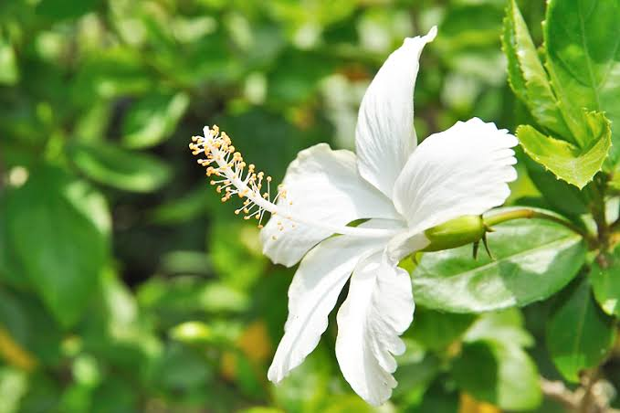

Kandungan Utama
- Flavonoid
- Antosianin
- Polifenol
- Vitamin C
- Antioksidan alami
- Saponin
- Tanin
- Senyawa diuretik alami
- Asam organik


Nama Ilmiah : Hibiscus rosa-sinensis L.
Bunga raya putih merupakan salah satu tanaman hias yang juga dimanfaatkan sebagai tanaman obat keluarga (TOGA). Selain memiliki bunga yang indah, tanaman ini mengandung berbagai senyawa aktif yang berpotensi memberikan manfaat bagi kesehatan. Dalam pengobatan tradisional, bagian bunga, daun, dan akar sering dimanfaatkan untuk membantu meredakan demam, batuk, sariawan, serta menjaga daya tahan tubuh.
Bunga raya putih memiliki berbagai manfaat yang telah dikenal dalam pengobatan tradisional. Kandungan flavonoid, polifenol, dan antioksidan membantu melindungi tubuh dari radikal bebas serta mendukung sistem kekebalan tubuh. Secara tradisional, tanaman ini dipercaya dapat membantu menurunkan demam, meredakan batuk, mengurangi sariawan, membantu mempercepat penyembuhan luka ringan, mengurangi peradangan, serta menjaga kesehatan kulit. Air rebusan daun maupun akar bunga raya putih juga sering dimanfaatkan untuk membantu menjaga kesehatan saluran pencernaan dan memberikan efek menyegarkan bagi tubuh.
Bunga raya putih merupakan tanaman obat tradisional yang umumnya aman digunakan dalam jumlah yang wajar. Namun, manfaatnya masih memerlukan penelitian lebih lanjut untuk beberapa kondisi kesehatan. Ibu hamil, ibu menyusui, anak-anak, maupun seseorang yang sedang menjalani pengobatan tertentu sebaiknya berkonsultasi terlebih dahulu dengan tenaga kesehatan sebelum mengonsumsi olahan bunga raya putih secara rutin.
Scan QR Code berikut untuk membuka halaman informasi tanaman Bunga Raya Putih.